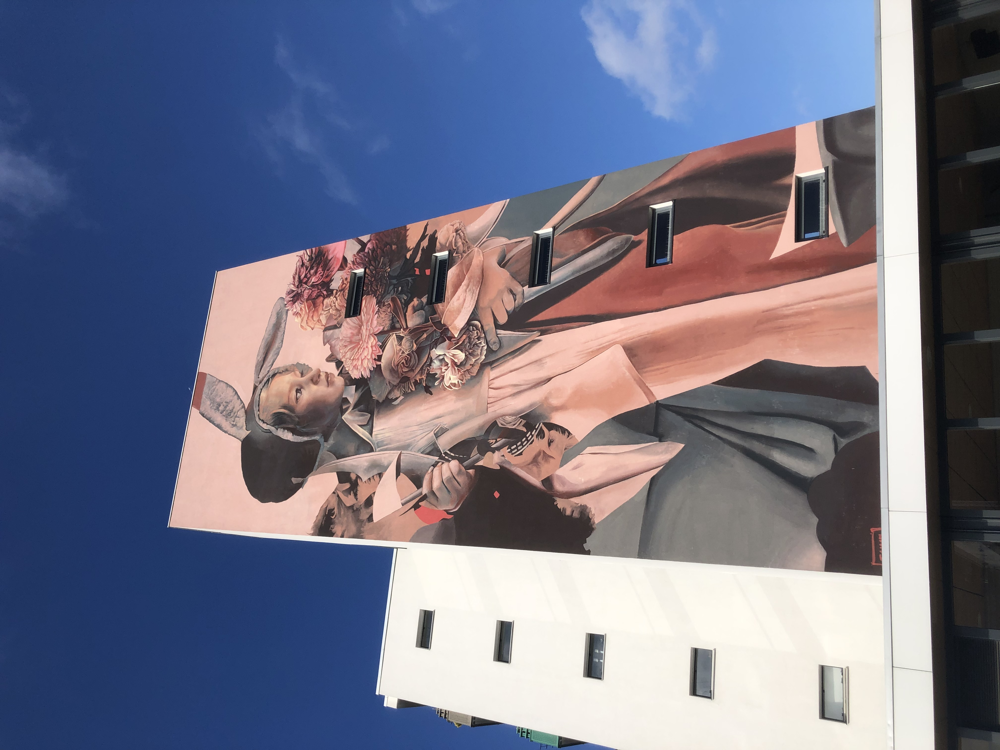
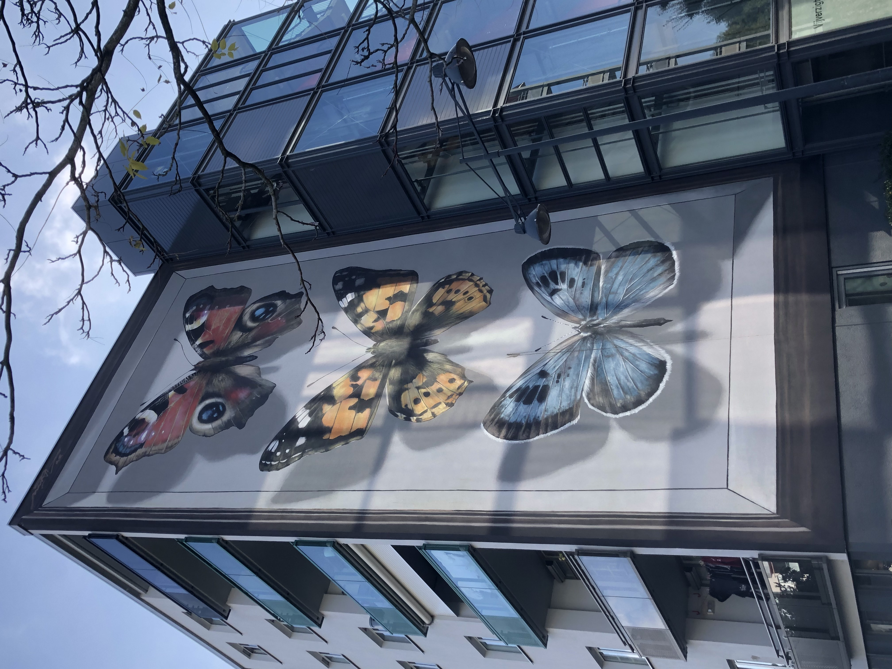
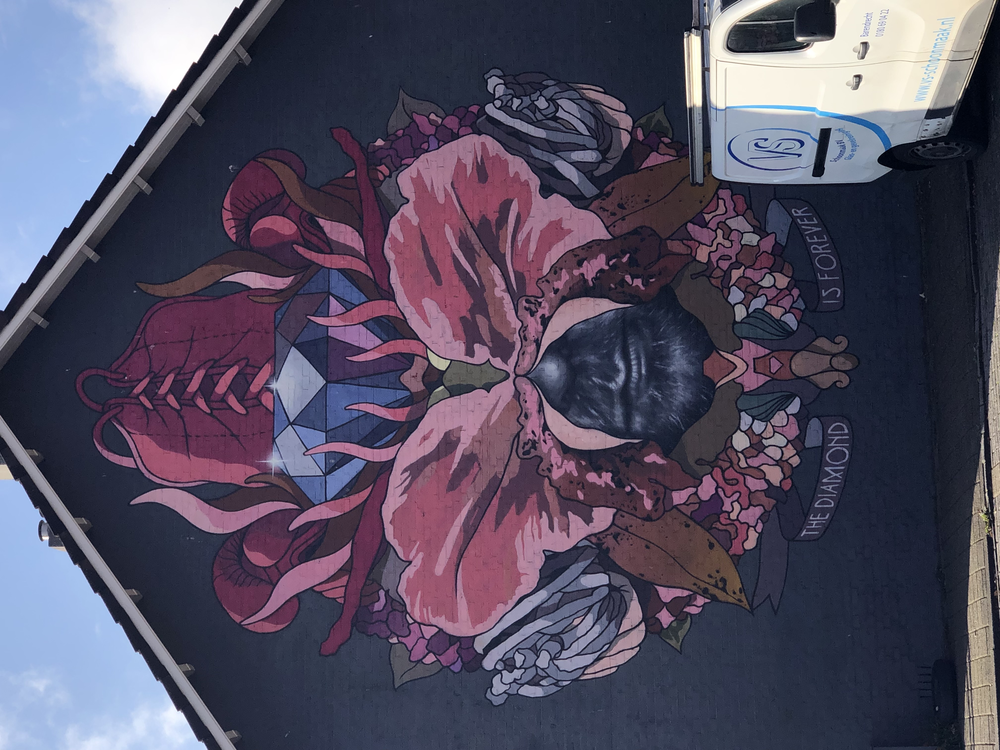

CA 1

De vlucht uit Breda
Dit kunstwerk heet de vlucht uit Breda, de makers van de Telmomiel heten Telmo Pieper en Miel Krutzmann, hun komen uit Rotterdam en zijn beide street artists. Het kunstwerk is te vinden bij de tuinzigtlaan 22, ik vind dit wel een goede locatie voor dit kunstwerk want bij dat kunstwerk is een kruispunt en er rijden veel auto's voorbij die allemaal dat kunstwerk kunnen zien. Je ziet hier een meisje en ik denk dat het een meisje is die op de vlucht is, voor mijzelf is dit niet heel herkenbaar. De betekenis achter dit verhaal is dat er tijdens de 2de wereld oorlog veel nederlanders geëvacueerd moesten worden omdat Nazi-Duitsland Nederland binnen viel, en hiermee willen ze een soort herdenkenis laten zien van de mensen die hebben moeten vluchten. Ik zie niet bepaald overeenkomsten want voordat ik opzocht wat de betekenis was wist ik niet dat dit er iets mee te maken had.
Datum van activiteit: 20/10/2022
Naam van de kunstvorm: gebouw
Plaats: tuinzigtlaan, Stad: Breda, Land: Nederland
Jaartal gemaakt: 2020
Waar heb je het gezien: bij de tuinzigtlaan 22
Hoelang duurde de activiteit: 30 minuten

De mooiste vlinders van de stad
Dit kunstwerk heet de mooiste vlinders van de stad, de maker van dit kunstwerk heet Youri Casell en hij is een Franse street-artist. Het kunstwerk is te zien bij de tuinzigtlaan. Ik vind dit wel een goede locatie om zo een kunstwerk neer te zetten want er wonen veel mensen in die omgeving en er rijden veel auto's in die omgeving dus veel mensen zien het bijv. als ze hun huis in willen stappen of langs rijden met de auto. Je ziet hier een insectendoos met vlinders erin als je goed kijkt kun je de doos zien aan die kleine zwarte strepen, en zoals je ziet hebben ze allemaal verschillende kleuren de ene is blauw de andere geel met zwarte en de andere rood met wit en zwart. Het verhaal van deze muurschildering is dat er in tuinzigt ontbreekt aan de stadsnatuur en daarmee wilt de blind walls gallery op een alternatieve wijze bedreigde vlinder soorten uit Nederland in tuinzigt brengen.
Datum van activiteit: 20/10/2022
Naam van de kunstvorm: gebouw
Plaats: tuinzigtlaan, Stad: Breda, Land: Nederland
Jaartal gemaakt: 2018
Waar heb je het gezien: bij de tuinzigtlaan Naam van gebouw niet kunnen vinden.
Hoelang duurde de activiteit: 30 minuten

Ode to kickboxer the diamond
Dit kunstwerk heet Ode to kickboxer the Diamond, Hij is gemaakt door een man genaamd Robin Nas Hij komt uit nederland en is een illustrator. Je kan dit kunstwerk zien bij de meidoornstraat 64, ik vind het een matige plek voor dat kunstwerk want je ziet het wel als je toenvallig in die straat woont of je met de auto richting het schilderij rijdt anders zie je het denk ik niet maar de plek is goed genoeg voor mensen om te zie hoe mooi dit kunstwerk is. Je ziet Kickbox/Thaibox legende Ramon Dekkers met kickbox handschoenen en bloemen en natuurlijk een diamant het stelt voor als een herdenk schilderij om het te herdenken voor wat voor legende hij was. Het verhaal achter dit kunstwerk is om de Kickboxer Ramon Dekkers te eren een van de beste kickboxers ter wereld.
Datum van activiteit: 20/10/2022
Naam van de kunstvorm: gebouw
Plaats: tuinzigtlaan, Stad: Breda, Land: Nederland
Jaartal gemaakt: 2018
Waar heb je het gezien: Meidoornstraat 64
Hoelang duurde de activiteit: 30 minuten
.jpg)
De mooiste duif van breda
Dit kunstwerk heet de mooiste duif van breda, de maker van dit kunstwerk heet Nicolas Alfalfa en hij is een street-artist. Je kan dit kunstwerk vinden bij de dijklaan, ik vind dit niet zozeer een goede locatie want het ligt redelijk afgelegen er rijden wel auto's maar als je in de auto zit valt het kunstwerk niet heel veel op ik snap wel waarom dat ze het kunstwerk daar hebben gezet. Ik zie een duif in een soort van net pak met een vogelkooi ik weet niet zozeer wat het moet voorstellen. Het verhaal achter dit kunstwerk is dat Alfalfa zich liet inspireren door ouder duivenmelkers die in de dijklaan woonden volgens Alfalfa woonden er maar liefst 14 duivenmelkers in de dijklaan waarvan eentje voormalig kampioen duivensport was.
Datum van activiteit: 20/10/2022
Naam van de kunstvorm: gebouw
Plaats: tuinzigtlaan, Stad: Breda, Land: Nederland
Jaartal gemaakt: 2018
Waar heb je het gezien: Dijklaan
Hoelang duurde de activiteit: 30 minuten